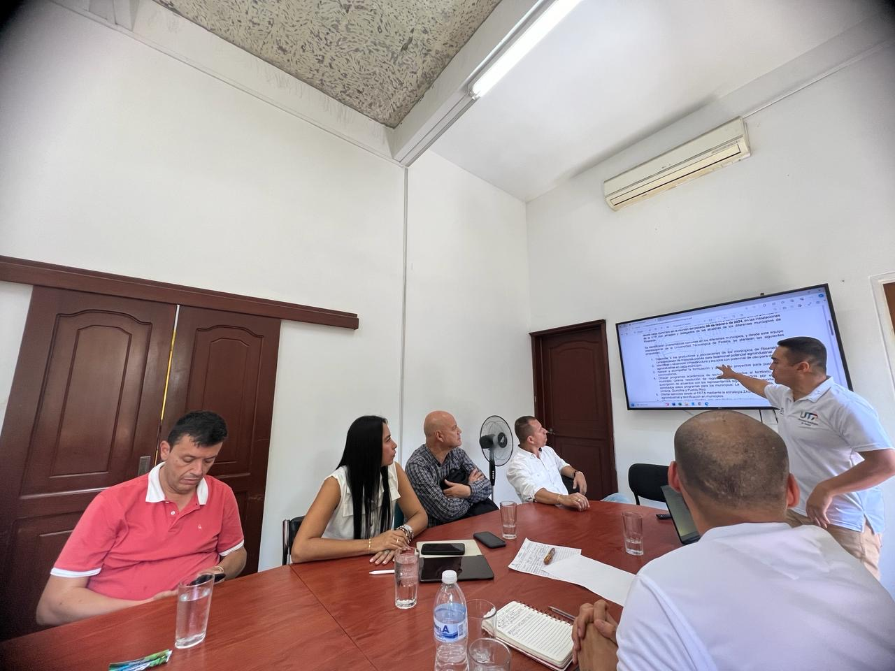

Alianza entre instituciones académicas y gubernamentales para el desarrollo local

El pasado viernes 5 de abril de 2024, representantes de los Programas de Tecnología Industrial y Administración Industrial, pertenecientes a la Facultad de Tecnología, se congregaron junto al Centro de Desarrollo Tecnológico Industrial (CDTA), la Red de Nodos de Innovación, Ciencia y Tecnología, y la Secretaría Técnica de la Red Departamental de Emprendimiento en la Alcaldía de La Virginia.
Leer noticia
Un legado que perdurará en el tiempo: Laboratorio de Agro Ecosistemas Tropicales

En la Universidad Tecnológica de Pereira hay un legado que sigue vivo en los recuerdos y en la academia; investigaciones y publicaciones guardan el trabajo que por años con dedicación y esmero realizó Alexander Feijóo Martínez. Un legado que sigue vibrando, resonando en las paredes del laboratorio que fundó y en los corazones de quienes compartieron su visión.
Leer noticia
Residentes de Medicina Interna de la UTP Ganadores del mejor ‘Caso Clínico’

El V curso formativo de medicina interna fue un escenario de gran éxito para la Universidad Tecnológica de Pereira, donde sus residentes destacaron con una notable victoria. Omar Armando Gutiérrez, residente de tercer año de la especialización en medicina interna en la UTP, nos cuenta sobre su experiencia y el reconocimiento obtenido.
Leer noticia
Más de 400 valoraciones deportivas y de riesgo a la salud se realizaron en el marco de la celebración del Día Mundial de la Actividad Física.
En la jornada de celebración denominada La UTP en Tenis, se realizaron un total de 47 actividades con presencia en 27 lugares del campus universitario. El evento que puso a la comunidad universitaria y externa a moverse alrededor del deporte y la salud física contó con la participación de más de 700 personas del estamento estudiantil, docente, administrativo y comunidad externa.
Leer noticia